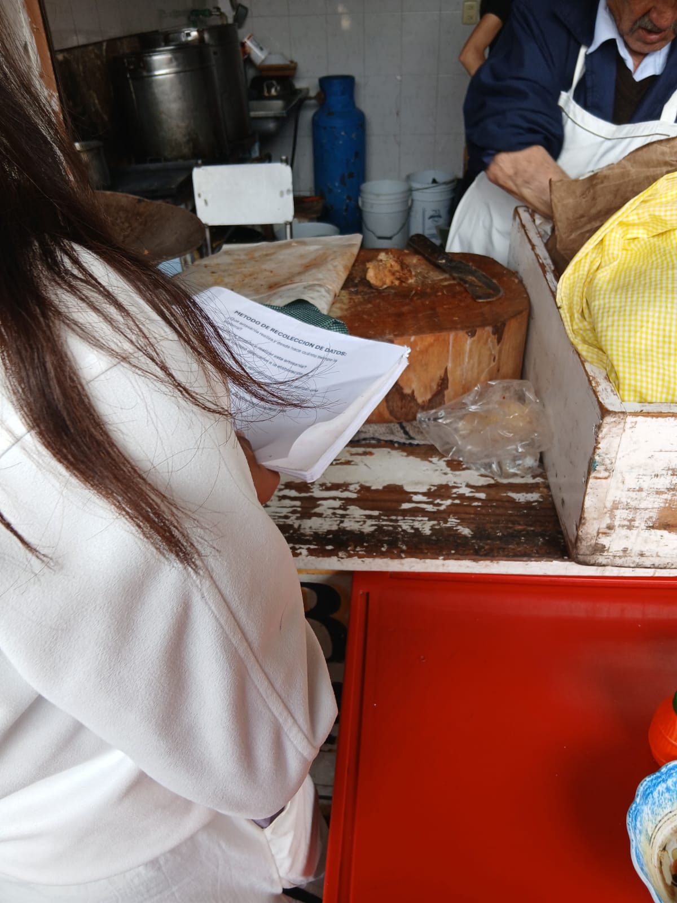

Artesanías Mazahuas
Expresión de la historia e identidad mazahua a través de técnicas tradicionales.

Textiles

Rebozos

Bolsas

Cultura Mazahua en Villa de Allende
La cultura mazahua forma parte de la identidad y riqueza cultural de Villa de Allende. Sus tradiciones y artesanías se transmiten de generación en generación.
Explorar CulturaExpresión de la historia e identidad mazahua a través de técnicas tradicionales.

